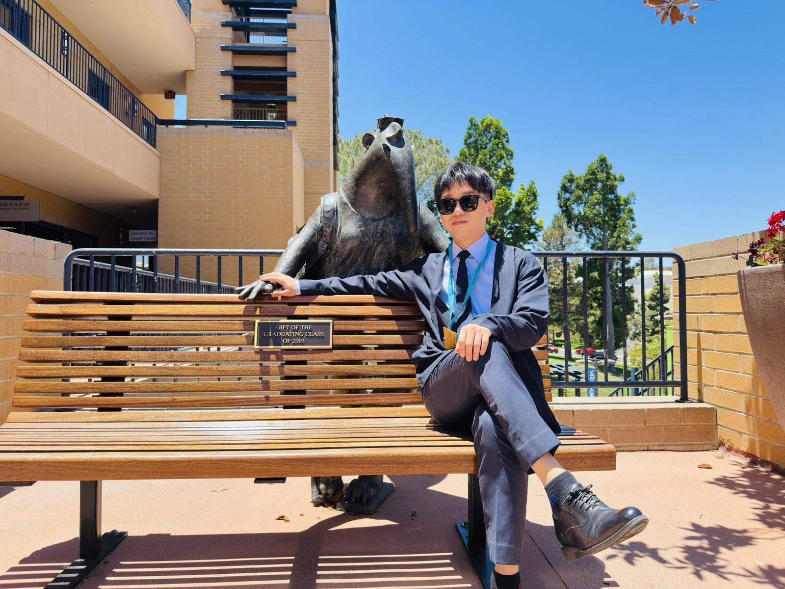
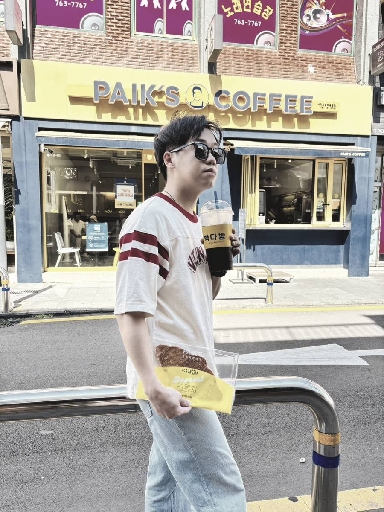

About關於
國立清華大學教育與學習科技學系博士生、該系兼任講師，並主持心築師塾工作室。
Profile自述

研究教師社群怎麼把經驗變成知識。現成的工具量不到這件事，所以我自己寫系統，把知識翻新理論變成可計算的指標。
這個問題來自我自己參與教師社群與課程共備的經驗：老師們談得很熱烈，卻很難把實踐智慧說成可傳遞、可累積的專業知識。教師專業學習社群常停在交換教材與技巧，很少進到概念層次的重構。
教學是研究的另一半。我把課堂當成研究場域，也把研究結果拿回課堂修正。開授的課以知識翻新十二原則搭配專題導向學習設計，每週要求學生放下 AI 工具、用自己的想法回答結構化提問；一學期累積下來的貼文，同時是教學紀錄與研究語料。
寫程式是被研究需求逼出來的技能，後來變成獨立的產出線。做過的教材從國小數學到高中國文，從密室逃脫到模擬器，共通點是讓學生有事情可做，而不是坐著聽。
Appointments學經歷
114.09 – 115.01 ／ 115.02 – 115.07 （114 學年度）
兼任講師｜國立清華大學教育與學習科技學系
連續兩學期獨立開授大學部課程：新興科技教學應用（18 人）、科技融入教學創新專題（12 人）。114 學年度第 1 學期教學意見調查填答率 77.78%。
115.06 –
研究獎助生｜運用基於 AI 的問題化設計思考以促進知識翻新
教師社群 SDGs 設計實踐專業成長計畫，主持人陳美如教授。
2025.08 – 2026.07
研究助理｜教育與學習科技學系研究獎勵計畫
研究師培生在知識翻新環境中的整合心態與共享能動性，主持人陳美如教授。
114.02 –
博士班｜國立清華大學教育與學習科技學系
指導教授陳美如。研究主題為教師專業發展社群中的知識翻新歷程與機制建構。
Honours獲獎與獎助
- 2026竹師教育學院第三屆培育跨領域教育領袖獎勵築師 2.0 計畫．主申請者
- 2026徐道寧教授數學教育與人文關懷實踐獎助春耕未來．數造共好．計畫主持
- 2025竹師教育學院第二屆培育跨領域教育領袖獎勵築師能動性．盛夏光年教師自主學習工作坊
- 2025青年學者獎教師能動性與教育改革國際學術研討會
- 2025新竹市第三屆首惜廚師惜食創意教案 第二名惜食創意教案組
- 2024最佳論文獎TSSE 融合教育的現在與未來國際學術研討會
- 2024極星課程獎教育極星獎
- 2024全國性多元文化教育優良教案設計 國中組入選作品「鬼頭鬼腦唱詩班：從中元到中秋」
- 2024AI 融入教學教案 優選作品「跨校課程．小說謎圖」
- 2024教育行政領導人員研習教育政策及課程實施創意發想 優選作品「數位領航：創新境界的探索與實踐」
- 2024教育行政領導人員研習教育政策及課程實施創意發想 優選作品「跨校協同教學：CM@HSINCHU．海濱 X 山城．博物誌」
- 2023第十四屆教育創新國際學術研討會 受邀講者
- 2023ViewSonic 創意思考獎
- 2022第二屆創新教師獎 最佳高效互動獎作品「消失的教室」
- 2022ViewSonic 創新教師 TOP 100
- 2021複合教學示範競賽 創新教師獎佳作作品「尤拉遊戲」
Studio心築師塾工作室
讓想法在對話中萌芽，在社群中成林。
工作室以知識翻新為核心，做教師專業成長社群、課程設計與數位教材。指導老師為國立清華大學竹師教育學院院長王子華教授、教育與學習科技學系陳美如教授。
2025 年夏天辦的「築師能動性・盛夏光年」教師自主學習工作坊，40 小時的課程裡談的不是 AI 會不會取代教師，而是教師怎麼在 AI 進場之後仍然握著教學決策。那場工作坊獲得竹師教育學院第二屆培育跨領域教育領袖獎勵；隔年的「築師 2.0」再獲第三屆。
接受教師研習、工作坊與講座邀約，主題包含知識翻新的課程設計、AI 協作教案、數位教材開發與課堂互動系統導入。
Gallery側記


上圖是 ISLS 年會的會場。下面三張是研究以外的時間。